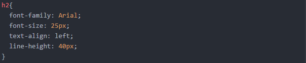

Paso 1:
En el primer paso vamos a personalizar el encabezado de la siguiente manera, sobre tu pagina web:
Paso 2:
En el siguiente paso vamos a editar los titulos H1,H2,H3

Paso 3:
A continuacion se editara el contenido de los parrafos de tu pagina web.
Paso 4:
Para cambiar el color de todos los títulos, parrafos, deberías ingresar los siguiente sintaxis:
Paso 5:
Para modificar el color de fondo de la pagina debes ingresar la siguiente sintaxis:
Paso 6:
Para añadir bordes a tus textos debes añadir las siguientes lineas:
Nota:
Recuerda buscar en mas fuentes y practica en la creacion de tus paginas para diseñar mas paginas increibles.